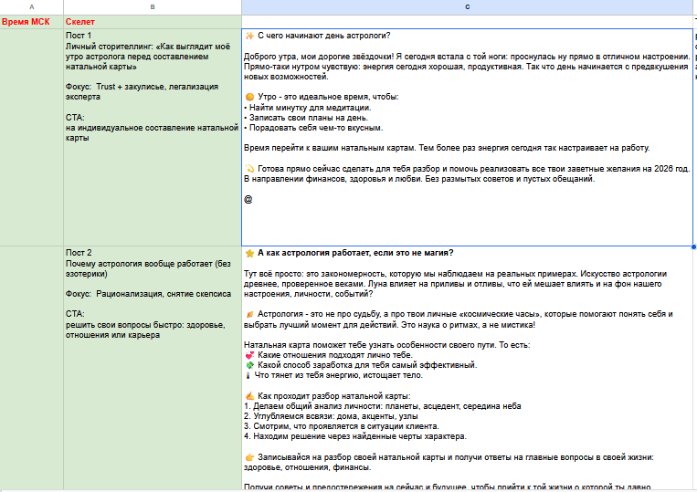
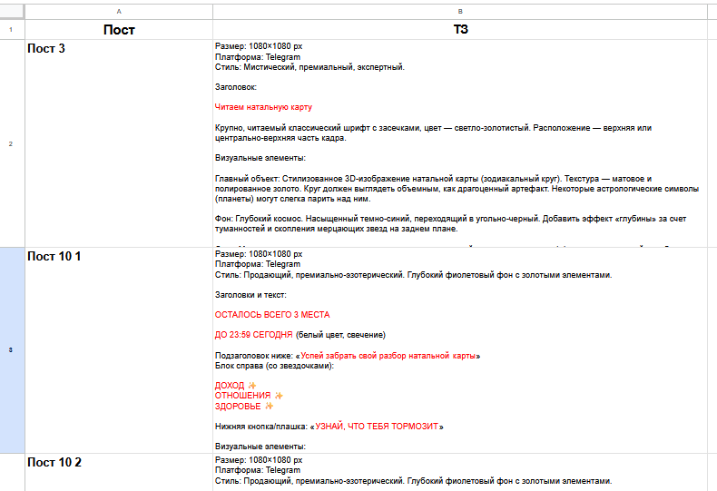
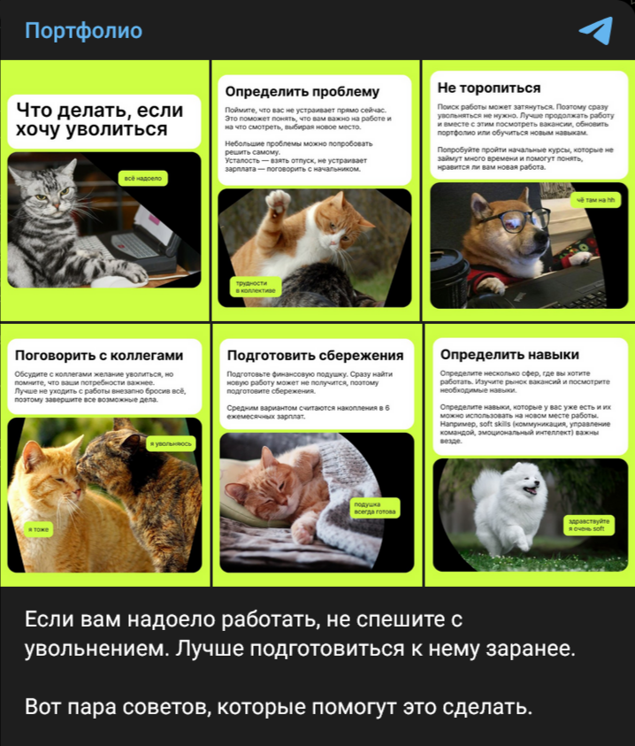
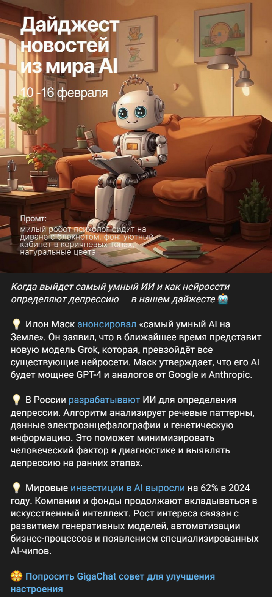
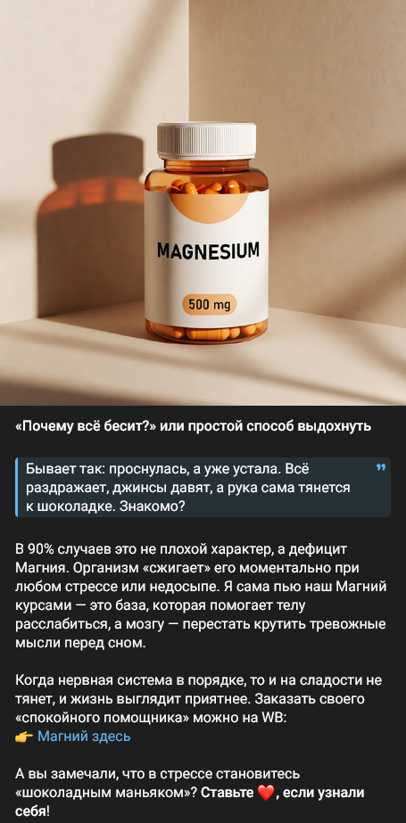

Вести несколько Telegram-каналов параллельно в разных нишах для Marketing Factory: астрология, инвестиции, бизнес, новости. Для каждого канала — своя аудитория, свой tone of voice, свой контент-план. Задача не просто писать посты, а выстроить редакционный процесс.
Работа строилась в несколько этапов для каждого канала.
Сначала — погружение в нишу и аудиторию. Для астрологического канала это женская аудитория 25–45, которая ищет практические советы. Для инвестиционного — люди, которые хотят разобраться в теме, но боятся сложного языка. Под каждую аудиторию прописывал отдельный tone of voice и логику контента.
Затем — разработка контент-плана. Для каждого канала создавал рубрикатор: какие форматы, как часто, какую функцию выполняет каждый тип поста. Изучил похожие каналы, выделил интересные рубрики, придумал несколько своих. Использовал ИИ Claude для поиска интересных идей.

После этого — производство контента. Иногда писал посты сам или передавал авторам с подробным ТЗ: тема, рубрика, формат, желаемый CTA.
Параллельно работал с визуалом: ставил ТЗ дизайнеру, подбирал картинки, следил за тем, чтобы оформление соответствовало стилю канала. Часть изображений генерировал через Grok и Nano Banana, затем дорабатывал в Figma.




Посмотреть примеры других постов можно в ТГ-портфолио
Результат — отлаженный процесс ведения нескольких каналов параллельно без потери качества и уникальности каждого. Умею быстро погружаться в новую нишу, выстраивать контент-стратегию под конкретную аудиторию, писать сам и ставить понятные ТЗ авторам и дизайнерам. Использую ИИ-инструменты для ускорения работы, но финальный контент всегда проходит через ручную редактуру.